Research Interests
My research interests are:
- Control design, Decision making and Motion planning for Autonomous Aerial Systems
- Computer vision, Machine learning and their applications in aerial Robotics
- Dynamics and Design of rotary wing based aerial vehicles
Research Experience
PhD thesis
Multi-agent Motion Planning in Presence of Adversaries
Advisor: Prof. Dimitra Panagou , University of Michigan (Sep 2017 - till date)
As part of my Ph.D research, I have been developing control algorithms for a team of defending robots that are protecting a safety-critical area from attacks by adversarial robots. I have been studying herding and interception strategies for the defending team for class of attacking behaviors by the adversarial team. The developed algorithms lie at the intersection of game theory (non-zero sum games), optimal control, finite-time stability, combinatorial optimization and machine learning techniques.
.
Multi-agent Motion Planning in Presence of Adversaries
Advisor: Prof. Dimitra Panagou , University of Michigan (Sep 2017 - till date)
As part of my Ph.D research, I have been developing control algorithms for a team of defending robots that are protecting a safety-critical area from attacks by adversarial robots. I have been studying herding and interception strategies for the defending team for class of attacking behaviors by the adversarial team. The developed algorithms lie at the intersection of game theory (non-zero sum games), optimal control, finite-time stability, combinatorial optimization and machine learning techniques.
.
1) 'StringNet Herding' approach to herd an adversarial swarm
Gazebo simulation:
Experimental demonstration:
- 'StringNet' is a closed formation of barriers formed by the defenders around the adversarial swarm in order to constraint the and control the attackers' motion.
- A combination of open-loop, near time-optimal controllers (that result in forming the defenders’ formation), and statefeedback controllers with finite-time convergence guarantees under bounded inputs (that guide the formation around attackers and towards the safe area) synthesize the herding strategy.
- Chipade, V. S., Panagou D., " Multi-Agent Planning and Control for Swarm Herding in 2D Obstacle Environments under Bounded Inputs," IEEE Transactions on Robotics, 38(2), pp.-, May 2021.
- Chipade, V. S., Panagou D., "Herding an Adversarial Swarm in an Obstacle Environment," 58th IEEE Conference on Decision on Control, Nice, France, December 2019.
Gazebo simulation:
Experimental demonstration:
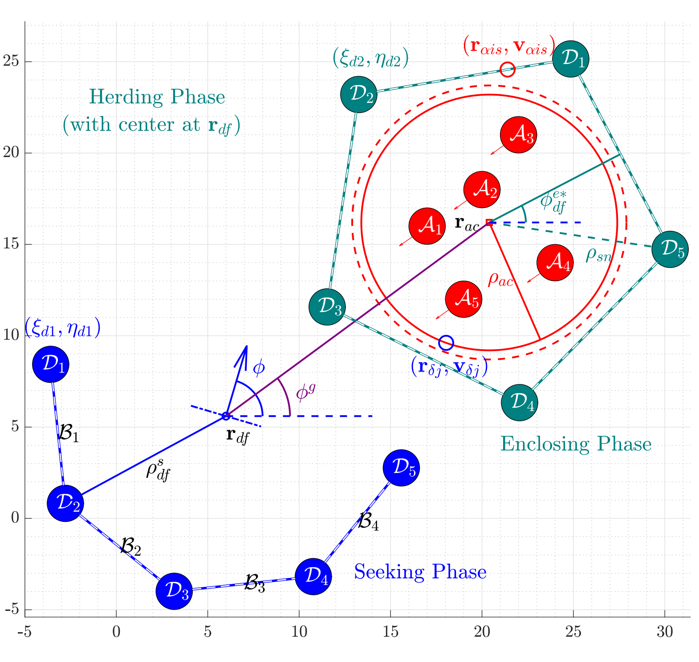
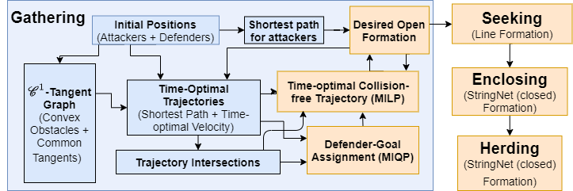
2) 3D-StringNet Herding
- '3D-StringNet Herding' is an extension of our 2D 'StringNet Herding' approach.
- We provide a systematic approach to design three types of 3D formations of triangular net-like barriers that are used in the '3D StringNet Herding' approach so that minimum number of defenders are employed.
- Zhang W., Chipade, V. S., Panagou D., "Herding an Adversarial Swarm in Three-dimensional Spaces," (under review).
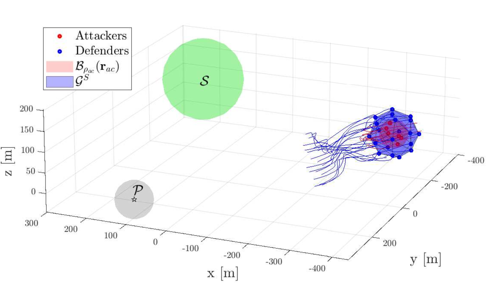
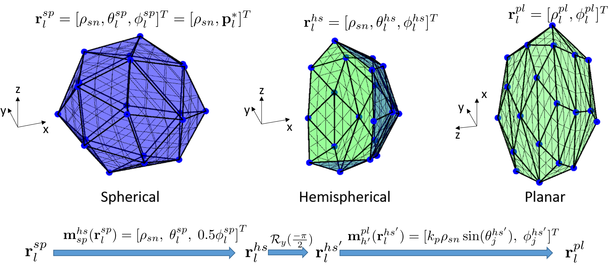
3) Multi-Swarm Herding
- We develop a clustering-based assignment algorithm to herd swarms of attackers in the event when all attackers do not stay together but rather split into smaller sub-swarms as they sense the defenders.
- We use ‘Density-based Spatial Clustering of Application with Noise (DBSCAN)’ algorithm to identify the spatially distributed swarms of the attackers and the defenders are then assigned to each identified swarm of attackers by solving a mixed-integer quadratically constrained program (MIQCP).
- Chipade, V. S., Marella V. S. A., Panagou D., "Aerial Swarm Defense by StringNet Herding: Theory and Experiments," (under review)
- Chipade, V. S., Panagou D., "Multi-Swarm Herding: Protecting against Adversarial Swarms," 59th IEEE Conference on Decision on Control, Jeju Island, Republic of Korea, December 2020.
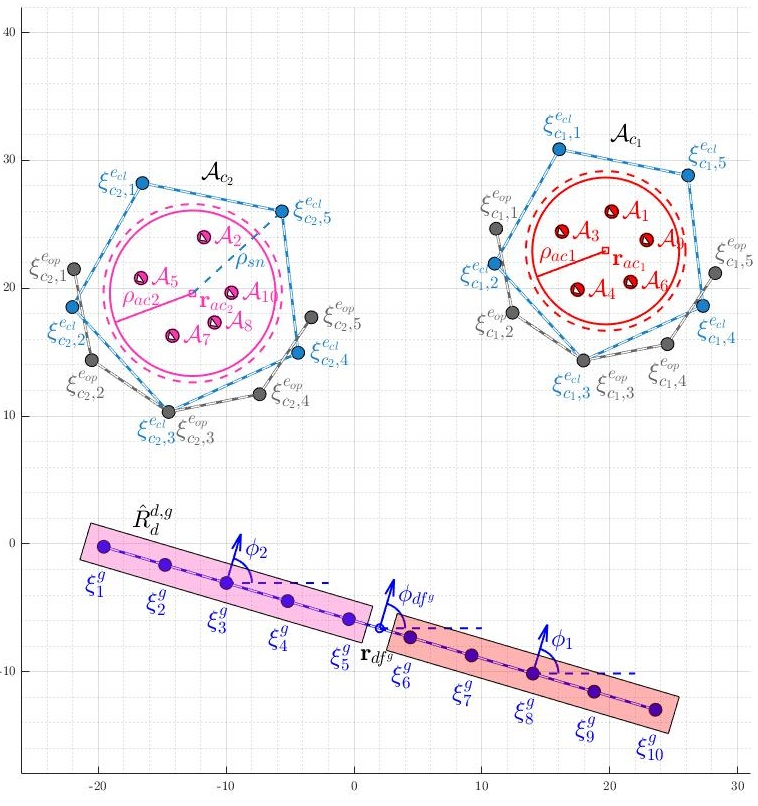
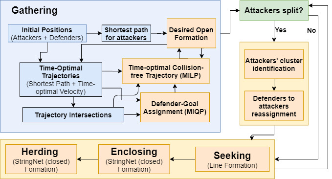
4) Inter-Defender Collision Aware Interception Strategy against Multiple Attackers

- We developed best-against worst time-optimal strategy for each defender against each of the attacker
- We then assign the defenders to intercept attackers by solving a mixed-integer quadratic program which finds assignment of the defenders to the attackers that minimizes the chances of the defenders colliding with other defenders on their optimal trajectories corresponding to the assigned attacker
- The control action of the defenders are further modified using control barrier function based correction term to avoid the collisions among the defenders when the collision-aware assignment is not sufficient to avoid the inter-defender collisions.
- Chipade, V. S., Panagou D., "IDCAIS: Inter-Defender Collision-Aware Interception Strategy
against Multiple Attackers," (under review)
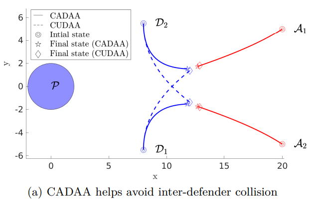
Masters thesis
Advanced Flight Dynamic Modelling and Adaptive Control of Variable Pitch Quadrotor
Advisors: Prof. Abhishek and Prof. Mangal Kothari , IIT Kanpur (May 2016 - May 2017)
Reference : Chipade V. S., Abhishek A. and Kothari M., " Advanced Flight Dynamic Modelling of Variable Pitch Quadrotor," In 2018 AIAA Atmospheric Flight Mechanics Conference (p. 1763).
Advanced Flight Dynamic Modelling and Adaptive Control of Variable Pitch Quadrotor
Advisors: Prof. Abhishek and Prof. Mangal Kothari , IIT Kanpur (May 2016 - May 2017)
- Developed an advanced flight dynamic model describing generalized motion of the variable pitch quadrotor using Blade Element Momentum Theory (BEMT) and Drees’ inflow model for non-uniform induced velocity field.
- Validated the thrust and torque predicted by the aerodynamic model (rotor dynamics) used within the advanced flight dynamic analysis through experimental results
- Developed two robust non-linear control algorithms namely integral backstepping and adaptive backstepping to control a variable pitch quadrotor in the event of suddent mass change in package delivery applications.
- Added a control allocation loop in the control architecture to generate blade pitch inputs, which tackles non-linearities involved in the mapping of forces and moments to thrust coefficients.
Reference : Chipade V. S., Abhishek A. and Kothari M., " Advanced Flight Dynamic Modelling of Variable Pitch Quadrotor," In 2018 AIAA Atmospheric Flight Mechanics Conference (p. 1763).
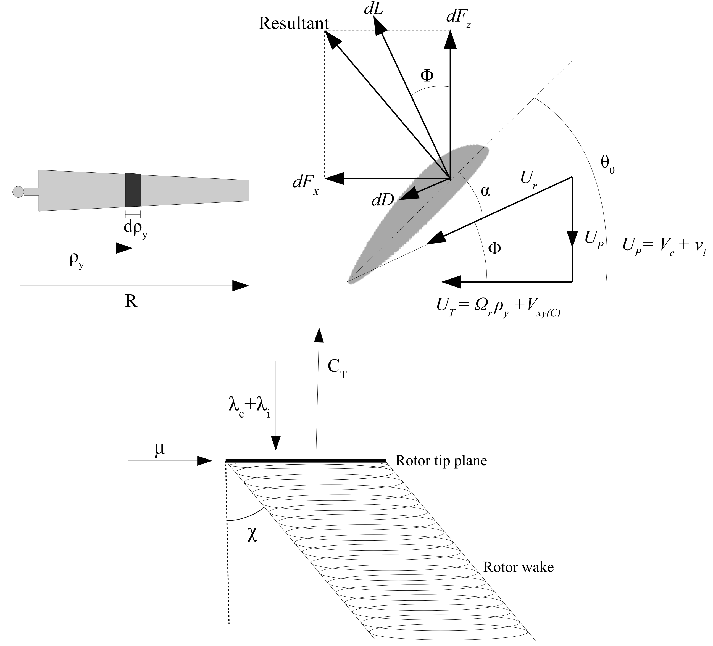
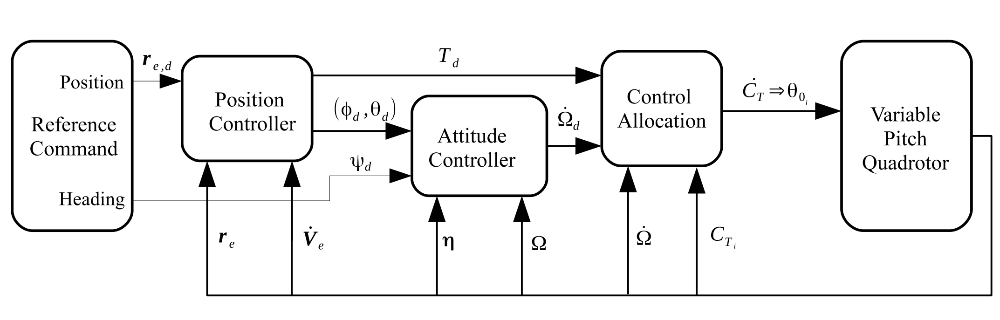
Design of a quadrotor biplane vertical takeoff and landing (VTOL) UAV
Project under, Prof. Abhishek, IIT Kanpur (Jan-Apr 2015, May 2016-present)
Reference: Chipade, V. S., Abhishek A., Kothari M., Chaudhari, R., "Systematic design methodology for development and flight testing of a variable pitch quadrotor biplane VTOL UAV for payload delivery," Mechatronics, Vol. 55, pp. 94-114, Aug 2018.
Project under, Prof. Abhishek, IIT Kanpur (Jan-Apr 2015, May 2016-present)
- Proposed a novel design of a hybrid UAV which combines helicopter characteristics of a quadrotor and fixed wing characteristics of a biplane and performed a preliminary design calculations for the design. This design is very well suited for Autonomous Aerial Package Delivery
- Used a modified blade element momentum theory (BEMT) for performance calculations for the proprotor design. This theory takes into account the effect of large inflow angles and swirl velocity component
- Designed wing parameters for biplane wing configuration using a typical monoplane design approach and scaled the parameters to biplane configuration keeping the total area same and optimizing the benefits of biplane configuration
- Designed other aspects of the design such as power plant selection i.e. Gasoline engine selection, transmission mechanism for transferring power from engines to the rotors, Avionics kit etc.
- Fabricated a proof of concept vehicle and tested it in hover flight mode
- Received appreciation from Hindustan Aeronautics Limited (HAL) for the design work which was Submitted to 'Dr. V.M.Ghatage Memorial Competition for pioneering ideas in Aerospace' organised by HAL. The project is shortlisted by HAL for funding its development to a finished product
Reference: Chipade, V. S., Abhishek A., Kothari M., Chaudhari, R., "Systematic design methodology for development and flight testing of a variable pitch quadrotor biplane VTOL UAV for payload delivery," Mechatronics, Vol. 55, pp. 94-114, Aug 2018.
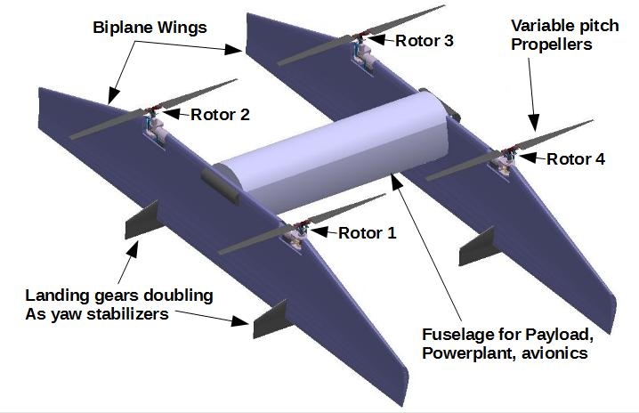
Undergraduate thesis
Motion Planning for Variable Pitch (VP) Quadrotor using Feedback Controller based Information RoadMap (FIRM)
Mentor - Prof. Abhishek, IIT Kanpur (Jul 2015-Apr 2016)
Motion Planning for Variable Pitch (VP) Quadrotor using Feedback Controller based Information RoadMap (FIRM)
Mentor - Prof. Abhishek, IIT Kanpur (Jul 2015-Apr 2016)
- Implemented a motion planning algorithm which generalizes the Probabilistic RoadMap (PRM) framework to Feedback controller based Information-state RoadMap (FIRM) that takes into account motion and sensing uncertainty in planning.
- The FIRM is a roadmap constructed in belief space, where its nodes are small subsets of belief space and the edges of FIRM are Markov chains in belief space induced by feedback controllers.
- Constructed FIRM by first sampling PRM nodes and associating FIRM nodes to these PRM nodes and used Linear quadratic Gaussian (LQG = LQR + Kalman filter) controller to stabilize the quadrotor from one node to another.
- Created a dense roadmap so that the stabilizing controllers can be directly used as edge controllers and assigned a cost to each of these edges which is calculated based on the estimation error during belief propagation and the stabilization time.
- Calculated transition probabilities using a particle based approach and simulated optimal control policy search by solving dynamic programming.
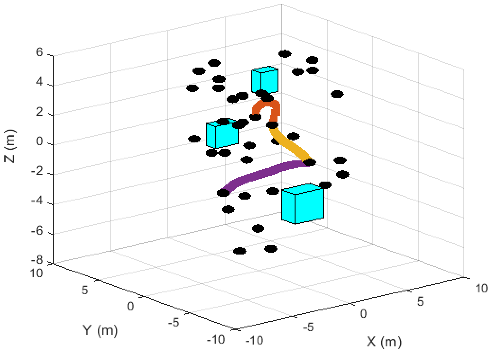
Summer Research Internship
IITK-TAMU internship exchange program 2015
Graph based motion planning for Quadrotor Helicopter
Mentor - Prof. Suman Chakravorty, Texas A&M University, College Station (May-Jul 2015)
IITK-TAMU internship exchange program 2015
Graph based motion planning for Quadrotor Helicopter
Mentor - Prof. Suman Chakravorty, Texas A&M University, College Station (May-Jul 2015)
- Implemented a roadmap based motion planning algorithm for quadrotor in which a roadmap is generated by sampling random points from a configuration space for quadrotor i.e. 3d position coordinates and heading angle
- Connected these points called nodes by edges generated by invoking LQR controllers corresponding to these nodes
- Solved a shortest path problem, while avoiding obstacles (in this case simple cubical obstacles), over this map by using dynamic programming and demonstrated the results through simulations.
- Developed simulations for some other stochastic controllers such as time varying LQR, stationary LQG, time varying LQG controller
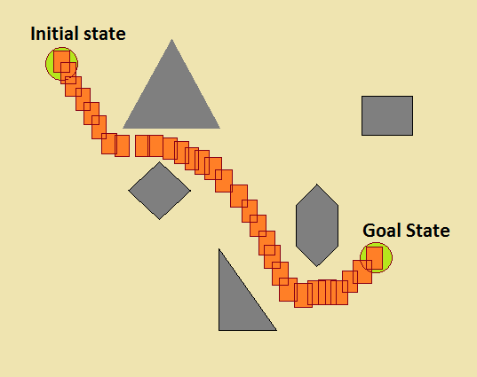